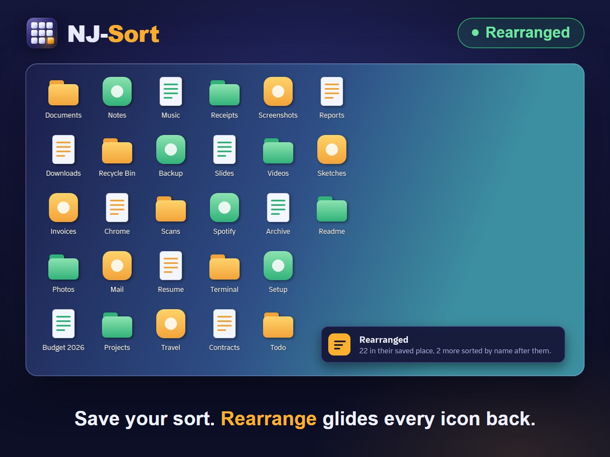
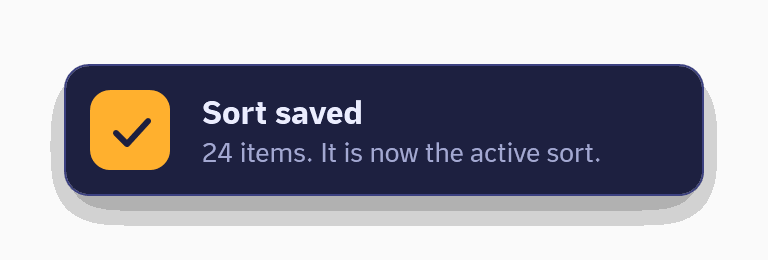

Your icons, where you put them.
Desktop icons keep moving? Save the way your desktop is arranged. When Windows scatters it, NJ-Sort glides every icon back.

- FreeNo account, no ads
- MIT licenceOpen source
- About 1.3 MBOne file, no installer
- Windows 10 and 11No admin rights
Save once. It stays put.
Press Alt S to save. Every save goes into the history, so you can go back to any earlier arrangement. Items that aren't in the sort follow it, sorted by name, the way Windows' own Sort by name does.

- Save sort nowSaves where every icon is as a new sort, and makes it the active one.
- Sort historyNewest on top, with the active sort marked. Pick one to go back to that point.
- ShortcutsClick a box and press new keys. Backspace removes one.

What it does when Windows moves things.
When Explorer restarts, the desktop empties for a moment. NJ-Sort never mistakes that for you deleting files.
It waits until the desktop is steady, puts your sort back, and checks once more a few seconds later. That covers an update, a crash, or a tool like NJ-Flush.
Sort history
Every save is kept, newest on top. Use, rename or delete any of them. Deleted sorts go to the Recycle Bin.
New items by name
A new download lands after your sorted icons, in name order, folders first. It never covers one of yours.
Undo
Every rearrange can be undone with one key, and redone with the same key.
Glide and sound
Icons glide into place one after another, a small toast confirms what moved, and a short recorded sound plays, a different one for save, rearrange, undo and errors. Motion and sound can each be turned off, and the volume has a slider.
Arabic and English
The whole app, window, toasts and tray menu, is also in Arabic, right to left. Choose Auto, English or العربية in the window; Auto follows the Windows display language.
Shortcuts you can change
They work while NJ-Sort sits in the hidden icons. Click a box in the window and press new keys.
Icons that glide, not jump.
Each icon lifts a touch, travels along a gentle curve, and settles into its place with a soft landing. They set off one after another, a desktop of 28 icons, like the demo, is home in under a second. If Windows animations are off, so is this.

- LiftA small pull-back before it moves, so the start reads as a decision.
- CurveA gentle arc instead of a straight slide.
- LandingA slight overshoot that settles on the exact spot.
Three steps. No admin rights.
Download
Get NJ-Sort.exe from the latest release. One file, no installer, about 1.3 MB.
Open it
It copies itself to %LOCALAPPDATA%\NJ-Sort, opens its window and waits in the hidden icons.
Save your sort
Arrange your icons and press Alt S. From then on, NJ-Sort keeps them there.
For Windows 10 or 11. The file isn't code-signed yet, so SmartScreen may ask on the first run: choose More info, then Run anyway. NJ-Sort only ever moves the desktop's own icons. If Windows' Auto arrange icons is on, NJ-Sort asks you to turn it off rather than fight it.